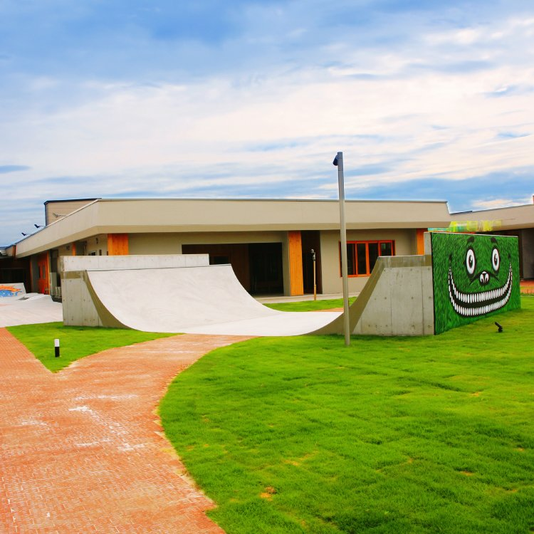
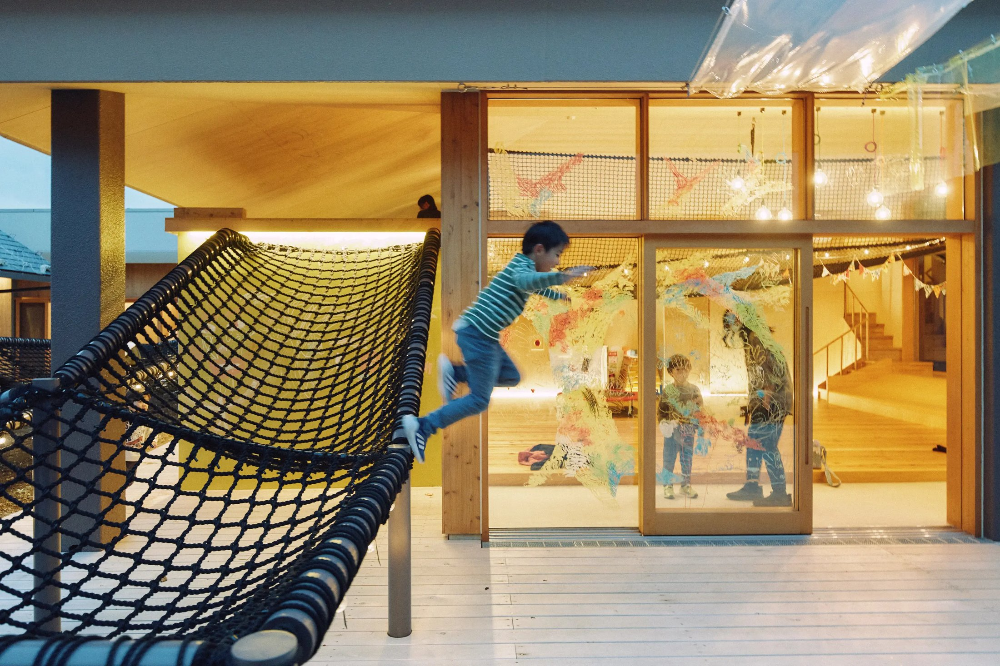
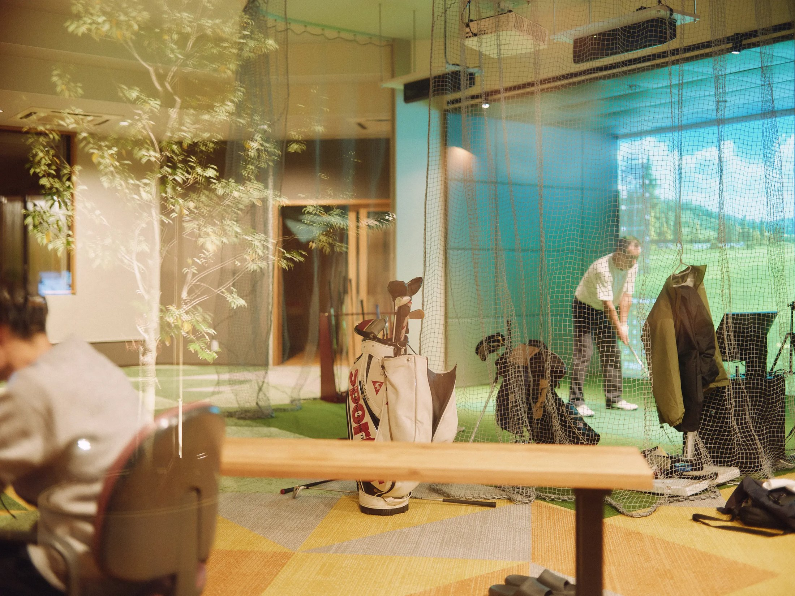

WORK 06
老人ホームのスケボー場
世代を超えて人が交わる、新しい福祉施設の風景。
その場所にすでにある風景、素材、人の営みを読み取りながら、建築が新しい関係を生み出すきっかけになることを目指したプロジェクトです。
わくわくデザイン＋水津功先生と協働 ／ 外構設計担当



その場所にすでにある風景、素材、人の営みを読み取りながら、建築が新しい関係を生み出すきっかけになることを目指したプロジェクトです。
わくわくデザイン＋水津功先生と協働 ／ 外構設計担当

